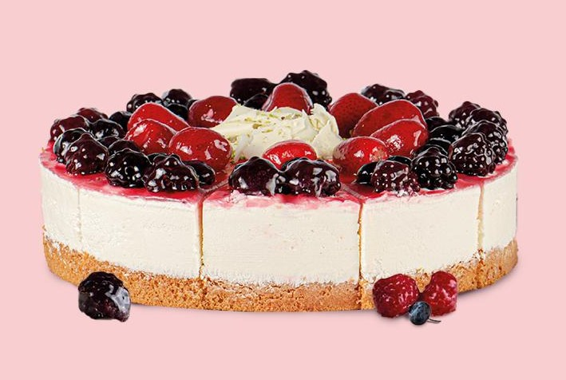

Kaç Kişilik:8-10 Kişilik Hazırlanma Süresi:20 dk Pişirme Süresi:20 dk

Lezzet ve görselliği bir araya getiren Orman Meyveli Beyaz Çikolatalı Pasta ile tatlı anlarınıza şıklık katın!
En taze orman meyveleri ve yoğun beyaz çikolata ile hazırlanan bu eşsiz pasta, her dilimde doğanın ferahlığını hissettiriyor.
Yumuşak pandispanya katmanları, zarif beyaz çikolata ganajı ve renkli meyve parçaları
ile dolu bu muhteşem tat,
sadece damak zevkinizi değil, gözlerinizi de şımartacak.
Tarif:Yasemin & Elif Atalar